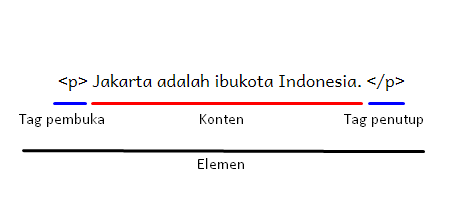
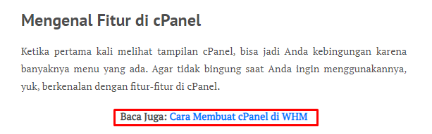

Pengertian HTML, Fungsi dan Cara Kerjanya
Jika Anda ingin menjadi web developer andal, Anda wajib banget khatam dengan pengertian HTML. Soalnya,
HTML adalah salah satu komponen website yang sangat penting.
Nah, pas banget, di artikel ini kami akan menjelaskan apa itu HTML, lengkap dengan sejarah, komponen,
fungsi, dan cara kerjanya. Harapannya, melalui artikel ini Anda mendapatkan pemahaman yang mendalam
mengenai HTML. Sehingga, Anda bisa lebih mudah mempelajarinya.
Langsung saja, mari kita simak pembahasannya.
Apa itu HTML?
Hypertext Markup Language atau HTML adalah bahasa markup yang digunakan untuk membuat struktur halaman website.
HTML terdiri dari kombinasi teks dan simbol yang disimpan dalam sebuah file. Dalam membuat file HTML, terdapat standar atau format khusus yang harus diikuti. Format tersebut telah tertuang dalam standar kode internasional atau ASCII (American Standard Code for Information Interchange).
Dengan adanya HTML, pengguna dapat membuat atau menyusun heading, paragraf, gambar, link, dan lainnya supaya dapat dilihat banyak orang melalui halaman website.
Untuk bisa diakses secara umum, pengguna perlu membukanya lewat aplikasi browser, seperti Internet Explorer, Chrome, atau Mozilla Firefox.
Setelah mengetahui pengertian HTML di atas, Anda mungkin penasaran bagaimana sejarah lahirnya HTML hingga saat ini? Untuk itu, mari simak terlebih dulu sejarah HTML berikut.
Sejarah HTML
Tim Berners-Lee merupakan sosok ilmuwan dibalik lahirnya HTML. Di tahun 1991, ia awalnya menciptakan HTML sebagai solusi untuk memudahkan para ilmuwan dalam mengakses dokumen satu sama lain.
Selang setahun kemudian, HTML mulai dapat digunakan untuk umum. Sejarah penggunaan HTML secara umum ini pun tak bisa lepas dari peran World Wide Web atau yang kita kenal dengan WWW. Keduanya saling bersinergi supaya informasi yang ingin disebarkan bisa diakses oleh banyak orang.
Tak disangka, kini HTML telah berevolusi menjadi bahasa markup yang telah digunakan oleh lebih dari 92,3% persen website di dunia.
Sampai saat ini HTML5 menjadi versi yang paling update dengan sistem yang paling canggih. Popularitas HTML versi terbaru ini pun sangat pesat. Bahkan, saat ini ada 87,4 persen website yang sudah menggunakan HTML5.
Mengenal Tag HTML, Elemen, dan Atribut
Setelah mengetahui bagaimana sejarah dari HTML, sekarang Anda perlu tahu komponen-komponen yang terdapat pada HTML.
Secara umum HTML terdiri dari Tag, Elemen, dan Atribut.
Lebih detailnya, simak penjelasannya berikut ini:
Tag
Tag adalah tanda awalan dan akhiran dalam perintah HTML yang akan dibaca oleh web browser. Tag dibuat dengan menggunakan kurung siku <…>, di mana di dalamnya berisi nama tag.
Setiap tag memiliki fungsi perintah yang berbeda-beda. Mulai dari membuat judul, paragraf, heading, cetak tebal, miring, italic, dan lainnya.
Misalnya: <bold>. Tag tersebut akan meminta browser untuk menampilkan teks dengan format tebal.
Selain itu, tag ditulis secara berpasangan, yaitu tag pembuka dan tag penutup. Pada tag penutup ditambahkan garis miring (/) di depan nama tag.
Tag HTML sendiri awalnya hanya berjumlah 18. Hingga saat ini sudah ada lebih dari 250 tag. Banyak juga, ya. Namun, Anda tak perlu menghafal semua tag yang ada.
Elemen
Elemen merupakan komponen HTML yang berupa keseluruhan kode dari tag pembuka hingga tag penutup. Elemen terdiri dari teks dan simbol yang berupa tag pembuka, isi tag atau konten, dan tag penutup.
Contohnya: <bold>Belajar HTML</bold>.
Pada sebuah elemen juga bisa berisi elemen lainnya. Jadi elemen tersebut tak hanya berisi satu tag saja, tetapi banyak tag. Elemen itu disebut nested elements. Sebagai contoh, simak kode berikut:
<html>
<body>
<h2>Judul Heading</h2>
<p>Paragraf pertama artikel.</p>
</body>
</html>
Jika diperhatikan elemen HTML tersebut, dari tag pembuka <html> lalu tag <body> yang berisi elemen tag heading dan elemen tag paragraf.
Atribut
Atribut adalah informasi atau perintah tambahan yang berada dalam elemen. Atribut ini berfungsi sebagai penjelas perintah tag pada elemen.
Misalnya, <img src=”gambar.jpg” alt “Bunga Matahari.”>.
Tag <img> memiliki atribut khusus yaitu (scr) dan (alt) yang artinya browser harus menampilkan gambar.jpg dengan alt text “Bunga Matahari”.
Dari contoh di atas, dapat diketahui juga kalau jumlah atribut dalam sebuah tag bisa lebih dari satu. Meski demikian, tidak semua atribut bisa digunakan dalam sebuah tag.
Selain atribut khusus, ada beberapa atribut yang digunakan untuk menentukan aksi pada dilakukan jika terjadi sesuatu pada elemen. Misalnya , (onload) saat loading selesai, (onoffline) saat tiba-tiba offline, (onresize) ukuran jendela. Atribut tersebut disebut dengan atribut event.
Atribut tersebut nantinya akan diimplementasikan dengan pemrograman Javascript. Sehingga halaman website dapat melakukan aksi tertentu.
Bagaimana Cara kerja HTML?
Oke, sekarang mungkin Anda bertanya-tanya bagaimana cara kerja file HTML sehingga dapat ditampilkan di browser. Sekarang mari simak penjelasannya.
Pertama, dokumen HTML Anda buat di aplikasi editor HTML dan menyimpannya dengan format .html atau .htm.
Dokumen HTML yang dibuat bisa saja lebih dari satu. Sebab dalam sebuah website, biasanya terdiri dari banyak halaman. Misalnya aja, halaman utama, kontak, blog, dan lainnya.
Nah, masing-masing dokumen, berisi komponen HTML yang akan menyusun bagian heading, paragraf, isi konten, dan lainnya.
Ekstensi file ini dapat dibuka dengan menggunakan web browser seperti Google Chrome, Safari, atau Mozilla Firefox.
Kemudian, untuk dapat diakses oleh banyak orang, Anda perlu mengonlinekannya terlebih dulu. Anda perlu menyewa layanan hosting website dan mengupload file website Anda di sana.
ika sudah, selanjutnya browser akan membaca dan me-render file HTML menjadi tampilan halaman website. Sehingga ketika orang mengakses website, mereka dapat mudah membaca informasi yang ditampilkan.
Fungsi HTML yang Wajib Anda Ketahui!
Sebelumnya kami telah sedikit singgung salah satu fungsi HTML. Nah, untuk lebih detailnya, berikut beberapa fungsinya yang wajib Anda ketahui!
Membuat Halaman Website
Fungsi utama dari HTML adalah untuk membuat halaman website. Sehingga Anda dapat berbagi informasi pada banyak orang melalui browser di internet.
HTML juga mudah untuk diaplikasikan untuk seorang pemula, tak heran, hampir semua website pasti dibuat menggunakan HTML.
Menjadi Pondasi Website
HTML juga berfungsi sebagai pondasi utama pembuatan website. Beberapa bahasa pemrograman akan diaplikasikan pada HTML untuk dapat menampilkan website yang lebih menarik.
Sebagai contoh, tampilan website dapat lebih berwarna dengan menggunakan CSS. Lalu website menampilkan banyak fitur dengan menggunakan bahasa pemrograman Javascript, PHP, atau lainnya.
Menandai Teks dan Bagian pada Halaman Website
Fungsi lainnya dari HTML ialah menjadi penanda teks dan bagian dari laman website. Semisal untuk menandai kalimat cetak tebal dan miring hanya perlu diberi kode <bold>, <italic>.
Selain itu, HTML juga berfungsi untuk menandai bagian pada website. Misalnya bagian header, main, footer, dan navigation. Sehingga lebih memudahkan pembuatan website.
Menampilkan Multimedia di Website
Supaya website tidak membosankan, Anda tentu perlu menambahkan gambar, video, tabel, dan media lainnya, bukan? Nah dengan HTML, Anda bisa menampilkan berbagai media sesuai kebutuhan.
Mengarahkan Pengguna ke Halaman Website Lain
Seiring perkembangannya, HTML kini juga berfungsi untuk mengarahkan pengguna ke halaman atau website lain melalui teks tertentu. Fungsi tersebut juga bisa disebut hyperlink. Misalnya seperti contoh gambar berikut.
Dengan hyperlink, pengunjung bisa dengan mudah mendapatkan informasi yang saling berhubungan dengan halaman yang dibaca tersebut.
Jadi, Pengertian HTML adalah…
HTML adalah bahasa markup yang berfungsi untuk membuat struktur website sehingga dapat diakses secara umum melalui aplikasi browser.
Kita patut berterima kasih pada Tim Berners-Lee yang telah mengembangkan HTML pada tahun 1991. HTML yang awalnya hanya dipakai untuk kebutuhan penelitiannya, kini dapat digunakan semua orang untuk berbagai kebutuhan.
Berkat perkembangannya, HTML juga telah memiliki banyak fungsi yang canggih. Misalnya, membuat website dengan multimedia, diaplikasikan dengan bahasa pemrograman lain, dan mampu menavigasi halaman website dengan hyperlink.
Pun HTML ternyata tidak terlalu sulit jika dipelajari seorang pemula. Anda hanya perlu memahami komponen dasar HTML, yaitu elemen, tag, dan atribut. Di mana, elemen merupakan keseluruhan teks pada HTML yang berita penanda perintah atau tag, serta penjelas perintah tag atau atribut.
Oke, sekarang Anda sudah mengetahui pengertian HTML, bukan? Next, Anda bisa mulai memperdalam belajar HTML berikut → Belajar HTML Lengkap untuk Pemula.
Jangan lupa juga untuk pelajari bahasa pemrograman lainnya, seperti CSS, Javascript, PHP, dan lainnya untuk menjadi web developer. Sebagai panduan, cobalah ikuti cara belajar pemrograman berikut → Cara Belajar Pemrograman Terlengkap dan Terbaru.